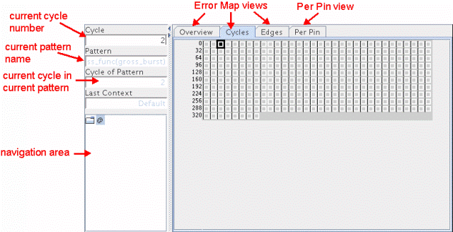

Error map tabs
The Error Map tool (see the figure below) consist of the following tabs:
The error map tabs present the errors of a particular test setup on a different level of detail. The edge view is only available if the result granularity is on the edge level. The errors are displayed as red marked cells in three different tabs.
The Error Map tool allows you to analyze an 8K/2K section of the test in more detail via the Detailed error map.
For detailed error information per pin, the Error Map Tool provides a Per Pin tab.

Functional changes
- Introduced before SmarTest 6.3.2
- SmarTest 7.1.1: Displaying the current pattern and its cycle number